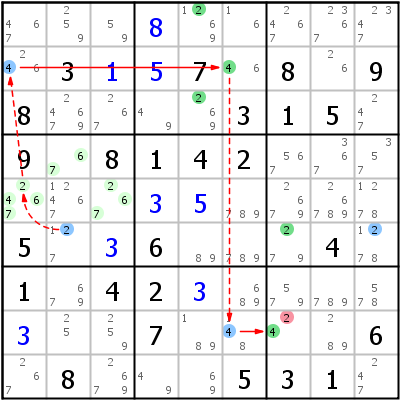

HoDoKu Lösungstechnik-Index: Beispiel für "Kraken Fish Type 1 (Chain 1)"

Originales Sudoku:
..........3..7.8.98....315.9.8142............5..6...4.1.42........7....6.8...531.
Verwenden Sie die folgende Zeile um das Sudoku in HoDoKu zu laden:
:0370:2:...+8......3+1+57.8.98....315.9.8142......+3+5....5.+36...4.1.42+3....+3..7....6.8...531.:211 412 612 712 213 613 713 416 916 933 572 982 986 587 987:287:
Die folgende Darstellung kann per Zwischenablage in die meisten Sudoku-Programme eingefügt werden:
.-------------------.---------------.-------------------. | 467 259 59 | 8 1269 16 | 2467 2367 2347 | | 246 3 1 | 5 7 46 | 8 26 9 | | 8 24679 267 | 49 269 3 | 1 5 247 | :-------------------+---------------+-------------------: | 9 67 8 | 1 4 2 | 567 367 357 | | 2467 12467 267 | 3 5 789 | 2679 26789 1278 | | 5 127 3 | 6 89 789 | 279 4 1278 | :-------------------+---------------+-------------------: | 1 679 4 | 2 3 689 | 579 789 578 | | 3 25 259 | 7 189 148 | 24 289 6 | | 267 8 2679 | 49 69 5 | 3 1 247 | '-------------------'---------------'-------------------'
Darstellung des Lösungsschrittes:
.----------------------.-----------------.----------------------. | 467 259 59 | 8 *1269 16 | 2467 2367 B2347 | | *246 3 1 | 5 7 *46 | 8 26 9 | | 8 24679 267 | 49 *269 3 | 1 5 B247 | :----------------------+-----------------+----------------------: | 9 A67 8 | 1 4 2 | 567 367 B357 | | A2467 12467 A267 | 3 5 789 | 2679 26789 1278 | | 5 *127 3 | 6 89 789 | *279 4 *1278 | :----------------------+-----------------+----------------------: | 1 679 4 | 2 3 689 | 579 789 B578 | | 3 C25 C259 | 7 189 *148 | *-24 C289 6 | | 267 8 2679 | 49 69 5 | 3 1 B247 | '----------------------'-----------------'----------------------' Kraken Fish Type 1: => r8c7<>2 Finned Franken X-Wing: 2 r6b2 c57 fr6c2 fr6c9 r6c2 -2- ALS:r4c2,r5c13 -4- r2c1 =4= r2c6 -4- r8c6 =4= r8c7 r6c9 -2- ALS:r13479c9 -8- ALS:r8c238 -2- r8c7
Copyright © 2008-12 von Bernhard Hobiger
Zuletzt geändert am 5. Mai 2025 von shorty#3746
(basierend auf dem 1to9only Github-Repo)
Alles Material auf dieser Site unterliegt der GNU FDLv1.3.